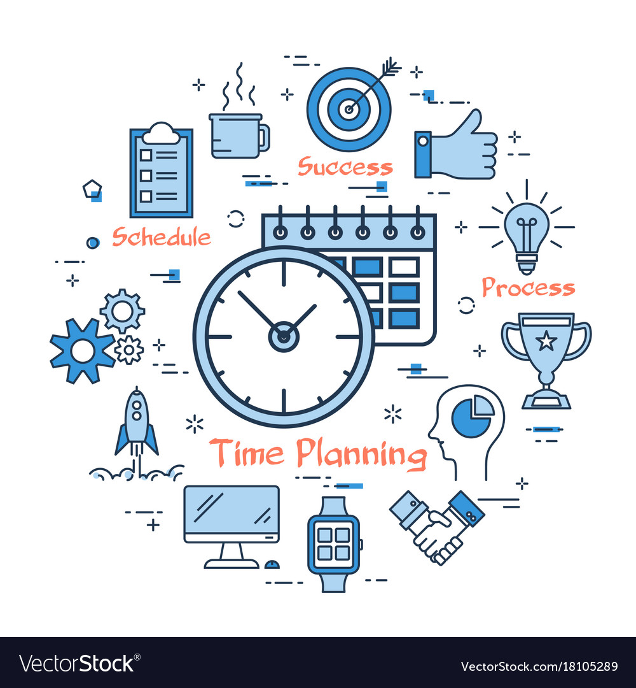

Laika plānošana ir būtiska prasme, kas palīdz efektīvi pārvaldīt savu laiku un sasniegt izvirzītos mērķus. Lai veiksmīgi plānotu laiku, ir svarīgi ievērot dažus pamatprincipus.
Pirmkārt, svarīgi ir izveidot skaidru apziņu par saviem mērķiem un prioritātēm. Noteikšana, kas ir īpaši svarīgi un kādas aktivitātes veicina mērķu sasniegšanu, palīdzēs koncentrēties uz būtisko.
Otrais solis ir izveidot plānu. Izsakot savas aktivitātes konkrētā secībā un laika rāmjos, var ievērojami palielināt produktivitāti. Plānojot, ir svarīgi ņemt vērā arī reālās iespējas un izvairīties no pārmērīga optimisma attiecībā uz pieejamo laiku.
Svarīga daļa no veiksmīgas laika plānošanas ir arī elastība. Ir svarīgi saprast, ka plāni var mainīties, un ir nepieciešams būt gatavam pielāgoties jaunajai situācijai. Tādējādi ir izvēlēties elastīgu pieeju, kas ļauj veikt nepieciešamās izmaiņas, nezaudējot mērķu redzējumu.
Lai labāk pārvaldītu laiku, ir ieteicams izmantot arī dažādas rīkus un tehnoloģijas, piemēram, plānotājus, atgādinājumus vai produktivitātes lietojumprogrammas. Šie līdzekļi var efektīvi atvieglināt uzdevumu pārvaldību un nodrošināt, ka nekas netiek aizmirsts.
Kopumā, veiksmīga laika plānošana prasa apzinātu pieeju, prioritāšu noteikšanu, elastību un izmantoto resursu optimizāciju. Izstrādājot savu laika plānošanas sistēmu, ir iespējams iegūt labumu gan personīgajā, gan profesionālajā dzīvē.
